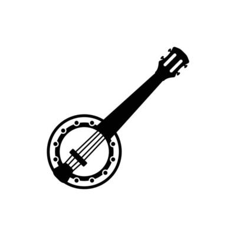

References for this project by section:
B - Banjo...as a Cosmogram? -
- Gerstin, Julian. “TANGLED ROOTS: KALENDA AND OTHER NEO-AFRICAN DANCES IN THE CIRCUM-CARIBBEAN.” NWIG: New West Indian Guide / Nieuwe West-Indische Gids, vol. 78, no. 1/2, 2004, pp. 5–41. JSTOR,http://www.jstor.org/stable/41850294 . Accessed 16 Apr. 2024.
- Lawal, Babatunde, 'Signifying Jars, Resonating Like a Banjar: Influence, Politics, and Poetics in Dave’s Pottery', Where Is All My Relation? The Poetics of Dave the Potter (New York, 2018; online edn, Oxford Academic, 21 June 2018), https://doi.org/10.1093/oso/9780199390205.003.0006, accessed 13 Mar. 2024.
- African-American Arts : Activism and Aesthetics (Conference) Bucknell University) (2016 : African American Arts : Activism, Aesthetics, and Futurity. Edited by Sharrell D. Luckett, Bucknell University Press, 2020, https://doi.org/10.36019/9781684481569
- Rucker, Walter C. "The Black Atlantic and the African Diaspora." Oxford Research Encyclopedia of Religion. February 26, 2018. Oxford University Press. Date of access 16 Apr. 2024, https://oxfordre.com/religion/view/10.1093/acrefore/9780199340378.001.0001/acrefore-9780199340378-e-475
A - Appropriation -
- Pestcoe, Shlomo. “‘Strum Strumps’ and ‘Sheepskin’ Guitars: The Early Gourd Banjo and Clues to Its West African Roots in the Seventeenth-Century Circum-Caribbean.” Banjo Roots and Branches, edited by ROBERT B. WINANS, University of Illinois Press, 2018, pp. 113–33. JSTOR, https://doi.org/10.5406/j.ctv80c9r6.10. Accessed 16 Apr. 2024.
- Gibson, George R. “Black Banjo, Fiddle, and Dance in Kentucky and the Amalgamation of African American and Anglo-American Folk Music.” Banjo Roots and Branches, edited by ROBERT B. WINANS, University of Illinois Press, 2018, pp. 223–55. JSTOR, https://doi.org/10.5406/j.ctv80c9r6.18. Accessed 16 Apr. 2024.
N - Minstrelsy -
- Linn, Karen Elizabeth. “The ‘Elevation’ of the Banjo in Late Nineteenth-Century America.” American Music, vol. 8, no. 4, 1990, pp. 441–64. JSTOR, https://doi.org/10.2307/3051763. Accessed 16 Apr. 2024.
O - Stories -
- GADDY, KRISTINA R. WELL OF SOULS : Uncovering the Banjo’s Hidden History. W W NORTON, 2024.
